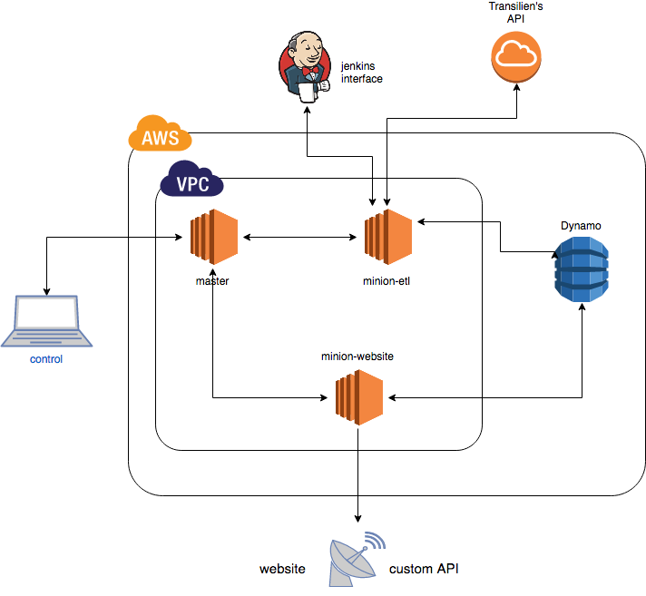

Overview¶
Hello, this documentation will detail how this ETL (Extract/Transform/Load) application works.
This repository is part of a broader project with SNCF’s R&D department to provide arrival time predictions for trains in Paris area.
A repository details how this project is deployed through Vagrant and Salt automation tools.
Another details details how the website and the API built for this project work.
Basically, this application is build around two tasks:
Task 1: scheduled departure times (from SNCF website in GTFS format):¶
- download schedules from SNCF website (csv format)
- save it in relational database (optionally)
- find each day which trips should pass, and at what time trains should pass in stations
- save it in Dynamo ‘scheduled_departures’ table
Task 2: real departure times (from Transilien’s API)¶
- extract data from transilien’s api
- transform XML received by api into json serializable objects
- query Dynamo ‘scheduled_departures’ table (can also query Postgres, but is much slower) to find out for each train predicted to arrive in a station, which trip_id is linked, and at what time it was scheduled to arrive.
- enrich these objects
- save it in Dynamo ‘real_departures’ table
Performances:¶
Task 2 is scheduled every two minutes, to not exceed our limitations on transilien’s API.
But the operation could be much faster.
For instance: when extracting information for 300 stations:
- 300 http calls to API are made asynchronously (single-threaded thanks to asyncio) and answer in less than 1 seconds.
- the around 6000 items we receive (about 20/call) are then enriched in less than a second
- it takes around 2 seconds to send 6000 requests (asynchronously again) to DynamoDB ‘scheduled_departures’ table to get their trip_ids and scheduled departure times (plus some more information about trips)
- it takes one more second to save those 6000 items in ‘real_departures’ table
So we could easily and without any problem launch this task every 10 seconds!
Main modules¶
All modules:¶